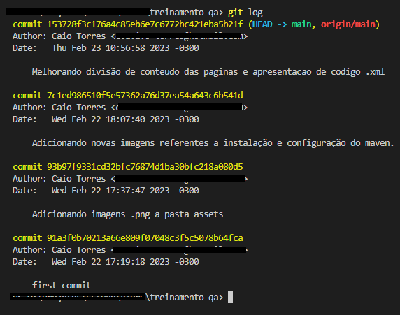

GIT
Comandos Git
BRANCH:
Uma característica brilhante (mas avançada) do GIT é sua capacidade de permitir que desenvolvedores e gerentes
de projeto criem vários ramos (branches) independentes dentro de um único projeto.
O objetivo principal de um branch é desenvolver novas funcionalidades, matendo-os isolados uns dos outros.
O branch padrão em qualquer projeto é sempre o master branch. Tantos branches quanto necessários
podem ser criados e eventualmente mesclados ao master branch.
Um novo branch pode ser criado usando o seguinte comando:
$ git checkout -b novo_branch
Se você deseja retornar ao master branch, o seguinte comando pode ser usado:
Alterar para a Master
$ git switch master
Alterar para o branch criado
$ git switch novo_branch
Para tornar o branch disponível para outros usuários, você terá que move-lô para o repositório remoto.
Para fazer isso, use o seguinte comando:
$ git push origin novo_branch
Qualquer branch pode ser excluído usando o seguinte comando:
Excluir um brancho no repositório local:
$ git branch -D novo_branch
Excluir um brancho no repositório remoto:
$ git push origin --delete novo_branch
ADD e COMMIT:
Alterações ou adições de arquivos propostas são adicionadas ao índice usando o comando add.
Para adicionar qualquer arquivo, o comando é:
Quando houver um ou mais arquivos a serem adicionados e você queira especificar
$ git add arquivo.txt
Quando você deseja adicionar todos os arquivos que estão naquela "árvore de trabalho"
$ git add .
Se você está realmente confiante o suficiente para fazer essas mudanaças no HEAD, então você pode usar o comando
commit:
$ git commit -m "Adicionar uma mensagem padronizada (ou não) sobre alterações que foram feitas (ou desfeitas)
nesse commit"
PULL, DIFF e MERGE:
Caso você queira atualizar seu diretório de trabalho local para o mais recente do repositório remoto, um simples
comando pode ser usado:
$ git pull
Para mesclar outro branch (dar um merge) no atualmente ativo, use:
$ git merge novo_branch
Se você der um merge ou pull, o GIT sempre tenta lidar com os conflitos por conta própria, mas as vezes não consegue.
Em caso de falha, devido a conflitos, o usuário tem que resolver os conflitos manualmente.
Depois de editar os arquivos (para erradicar conflitos), marque-os como merged usando:
$ git add arquivo.txt
Se antes do merge, você desejar visualizar as altearções, o seguinte comando pode ser executado:
$ git diff master novo_branch
LOG, REVERT e CHECKOUT:
Se você acabou fazendo bagunça e precisa reverter as alterações feitas em qualquer arquivo, o git oferece diferentes
maneiras de tratar isso, veremos aqui uma delas.
Exeute o comando para poder visualizar a lista de Logs da sua branch:
$ git log
Esse comando deverá retornar uma lista de commits realizados, algo como a imagem abaixo:

Dessa forma, você poderá selecionar o hash do commit que você deseja que seu arquivo volte:
git revert 91a3f0b70213a66e809f07048c3f5c5078b64fca
Caso você queira só desfazer as alterações que ainda não foram commitadas, rode o comando:
$ git checkout -- arquivo.txt
Isso substituirá as atlreações da árvore de trabalho pelos últimos dados presentes no HEAD. Quaisuqer alterações que
já tenham sido adicionados ao índice, não serão prejudicadas.
Atualizando Repositório Remoto
ATENÇÃO:
Lembre-se, antes de enviar as coisa para o repositório remoto, é necessário que você atualzie seu repositório local.
Dessa forma, utilize o comando:
$ git pull
Para poder enviar qualquer alteraçõa feita, o repositório local precisa estar atualizado com as úlitmas alterações
enviadas para o repositório remoto:
$ git pushorigin novo_branch